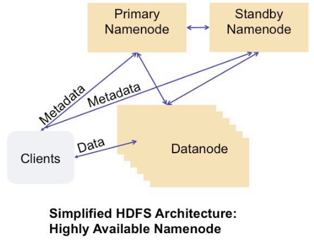
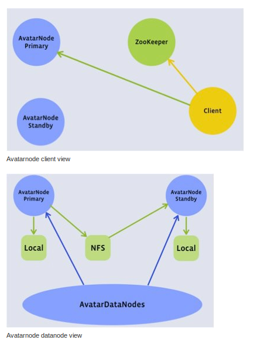
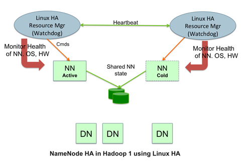
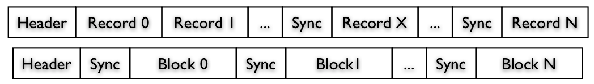
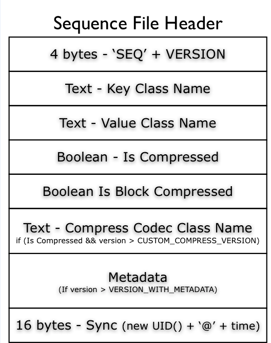
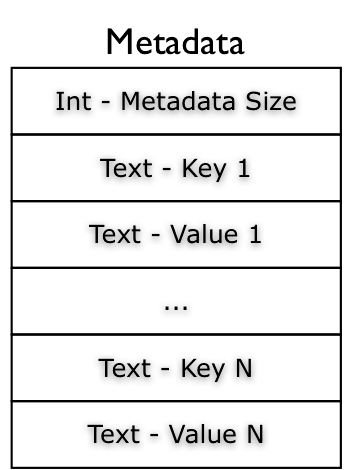
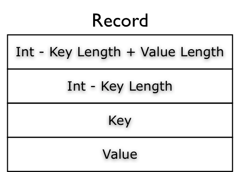
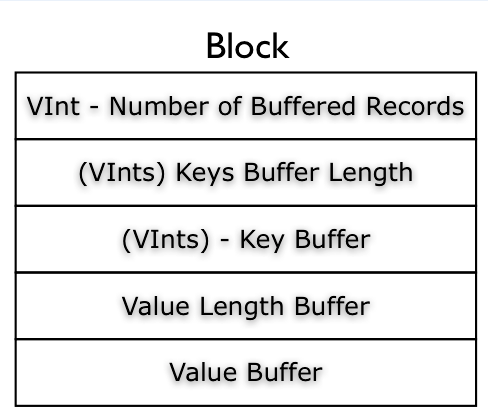
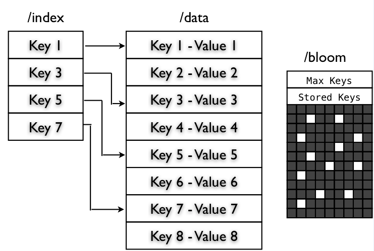

hdfs
Table of Contents
- 1 hdfs
- 1.1 观点
- 1.1.1 Under the Hood: Hadoop Distributed Filesystem reliability with Namenode and Avatarnode | Facebook
- 1.1.2 HA Namenode for HDFS with Hadoop 1.0 – Part 1 | Hortonworks
- 1.1.3 Why not RAID-0? It’s about Time and Snowflakes | Hortonworks
- 1.1.4 Hadoop I/O: Sequence, Map, Set, Array, BloomMap Files | Apache Hadoop for the Enterprise | Cloudera
- 1.1.5 The Truth About MapReduce Performance on SSDs | Cloudera Developer Blog
- 1.1.6 HDFS: Hadoop and Solid State Drive
- 1.2 日志分析
- 1.3 使用问题
- 1.4 代码分析
- 1.1 观点
1 hdfs
1.1 观点
1.1.1 Under the Hood: Hadoop Distributed Filesystem reliability with Namenode and Avatarnode | Facebook
fb数据仓库故障有41%是源于HDFS，而如果有reliable namenode解决方案的话那么其中有90%是可以避免的。

如果primary NN挂掉的话那么就切换到standby NN. datanode会将自己的status report到两个NN这样standby NN可以得到最新的状态可以使得切换时间更短。切换是通过zk来完成的，两个NN都在zk上面注册节点，client会从zk上了解primary NN对primary NN进行操作。之间的数据同步是通过共享存储来完成的，比如NFS，对于standby NN只需要增量读取操作内容即可。 todo(dirlt)：大家似乎对NFS的稳定性存在问题，不过我是觉得NFS上面主要是一些namenode上面一些操作的log，吞吐量不会太大而且也不会打开非常多的文件，在这个场景下面还是比较合适的

1.1.2 HA Namenode for HDFS with Hadoop 1.0 – Part 1 | Hortonworks
http://hortonworks.com/blog/ha-namenode-for-hdfs-with-hadoop-1-0-part-1/
Hadoop1 NameNode HA code failover with LinuxHA

- Failover Times and Cold versus Hot Failover
- The failover time of a high available system with active-passive failover is the sum of (1) time to detect that the active service has failed, (2) time to elect a leader and/or for the leader to make a failover decision and communicate to the other party, and (3) the time to transition the standby service to active.
- The first and second items are the same for cold or hot failover: they both rely on heartbeat timeouts, monitoring probe timeouts, etc. We have observed that total combined time for failure detection and leader election to range from 30 seconds to 2.5 minutes depending on the kind of failure; the lowest times are typical when the active server’s host or host operating system fails; hung processes take longer due to the grace period needed to be confident that the process is not blocked during Garbage Collection.
- For the third item, the time to transition the standby service to active, Hadoop 1 requires starting a second NameNode and for the NameNode to get out of safe mode. In our experiments we have observed the following times:
- A 60 node cluster with 6 million blocks using 300TB raw storage, and 100K files: 30 seconds. Hence total failover time ranges from 1-3 minutes.
- A 200 node cluster with 20 million blocks occupying 1PB raw storage and 1 million files: 110 seconds. Hence total failover time ranges from 2.5 to 4.5 minutes.
1.1.3 Why not RAID-0? It’s about Time and Snowflakes | Hortonworks
http://hortonworks.com/blog/why-not-raid-0-its-about-time-and-snowflakes/
- Reliability
- Before panicking – disk failures are rare. Google’s 2007 paper, Failure Trends in a Large Disk Drive Population, reported that in their datacenters, 1.7% of disks failed in the first year of their life, while three-year-old disks were failing at a rate of 8.6%. About 9% isn’t a good number.（超过三年的硬盘发生问题的概率在9%） 8块超过3年的磁盘同时使用出现问题的概率在1-（1-0.086）^8 = 0.513，这个几率还是相当高的。这个还不是主要的问题，因为JBOD: Just a Box of Disks也会遇到这个问题。
- 主要问题是，如果一旦一块磁盘出现问题的话，那么所有的磁盘上的数据都需要进行replication.因为RAID0是strip存储的，每个disk上面可能存储一个small block（64KB），而HDFS使用64MB作为block。这就意味着1个HDFS block在10 RAID0 disks上面的话会分摊在10个disk上面，如果一个disk出现问题的话，那么所有的HDFS block都发生损坏就都要进行replication
- Every Disk is a Unique Snowflake
- On RAID-0 Storage the disk accesses go at the rate of the slowest disk. RAID0带宽瓶颈限制在slowest disk上面
- The 2011 paper, Disks Are Like Snowflakes: No Two Are Alike, measured the performance of modern disk drives, and discovered that they can vary in data IO rates by 20%, even when they are all writing to same part of the hard disk.
- if you have eight disks, some will be faster than the others, right from day one. And your RAID-0 storage will deliver the performance of the slowest disk right from the day you unpack it from its box and switch it on.
1.1.4 Hadoop I/O: Sequence, Map, Set, Array, BloomMap Files | Apache Hadoop for the Enterprise | Cloudera
http://blog.cloudera.com/blog/2011/01/hadoop-io-sequence-map-set-array-bloommap-files/
SequenceFile存储格式如下 
内部有三种可选的存储格式：
- “Uncompressed” format
- “Record Compressed” format
- “Block-Compressed” format
然后使用哪种格式以及元信息是在Header里面标记的 
其中metadata部分可以存储这个文件的一些元信息，存储格式也非常简单。key和value只是允许Text格式，并且在创建的时候就需要指定 
至于里面的record/block存储格式如下   至于Compress算法，这个在Header里面的Compress Codec Class Name里面就指定了。
Hadoop SequenceFile is the base data structure for the other types of files, like MapFile, SetFile, ArrayFile and BloomMapFile.

MapFile是由两个SequenceFile组成，一个是index文件，一个是data文件。data文件里面的key是顺序存储的，index文件是data中key的部分索引. index的key和data的key相同，而value是这个record在data文件中的偏移，至于这个索引间隔可以通过setIndexInterval来设置。操作的时候会将index全部都读取到内存，然后在index里面所二分查找，然后在data文件里面做顺序查找。 note(dirlt):如果data文件要压缩的话，那么这个边界必须和index对应
SetFile是基于MapFile完成的，只不过value = NullWritable
ArrayFile也是基于MapFile完成的，只不过key = LongWriatble，然后每次写入都会+1
BloomMapFile扩展了MapFile添加了一个bloom文件，存储的是DynamicBloomFilter序列化内容。在判断key是否在MapFile之前，先走BloomFilter.
1.1.5 The Truth About MapReduce Performance on SSDs | Cloudera Developer Blog
1.1.6 HDFS: Hadoop and Solid State Drive
1.2 日志分析
1.2.1 All datanodes are bad. Aborting
note(dirlt):当时的情况是增加了datanode的处理线程数目但是没有重启regionserver.怀疑原因可能是文件句柄数量不够，重启regionserver之后恢复正常。
2013-06-05 03:45:16,866 FATAL org.apache.hadoop.hbase.regionserver.wal.HLog: Could not append. Requesting close of hlog
java.io.IOException: All datanodes 10.11.0.41:50010 are bad. Aborting...
at org.apache.hadoop.hdfs.DFSClient$DFSOutputStream.processDatanodeError(DFSClient.java:3088)
at org.apache.hadoop.hdfs.DFSClient$DFSOutputStream.access$1900(DFSClient.java:2627)
at org.apache.hadoop.hdfs.DFSClient$DFSOutputStream$DataStreamer.run(DFSClient.java:2799)
1.3 使用问题
1.3.1 hdfs shell
- balancer
- start-balancer.sh / stop-balancer.sh
- note(dirlt):可以限制比例阈值和传输带宽
- fsck
1.3.2 Filesystem Corruption and Missing Blocks
- HadoopRecovery < Storage < TWiki https://www.opensciencegrid.org/bin/view/Storage/HadoopRecovery
- HadoopOperations < Storage < TWiki https://www.opensciencegrid.org/bin/view/Storage/HadoopOperations
如果hdfs文件系统出现损坏的话，可以在webpage上面看到报警提示
或者可以通过运行命令hadoop dfsadmin -report看到系统状况
dp@dp1:~$ hadoop dfsadmin -report Configured Capacity: 487173353816064 (443.08 TB) Present Capacity: 466468596971008 (424.25 TB) DFS Remaining: 288401443913728 (262.3 TB) DFS Used: 178067153057280 (161.95 TB) DFS Used%: 38.17% Under replicated blocks: 1 Blocks with corrupt replicas: 1 Missing blocks: 1
按照提示可以运行hadoop fsck来检查整个文件系统。首先使用hadoop fsck /察看整个文件系统的状态如何。如果某个文件出现问题的话那么会报告
/hbase/.corrupt/dp18.umeng.com%3A60020.1349065853563: CORRUPT block blk_6229461233186357508 /hbase/.corrupt/dp18.umeng.com%3A60020.1349065853563: Under replicated blk_6229461233186357508_18529950. Target Replicas is 3 but found 1 replica(s).
说明文件/hbase/.corrupt/dp18.umeng.com%3A60020.1349065853563存在问题。
我们可以进一步察看这个文件的状态。使用下面的命令 hadoop fsck hbase.corrupt/dp18.umeng.com%3A60020.1349065853563 -files -locations -blocks -racks
dp@dp2:~$ hadoop fsck /hbase/.corrupt/dp18.umeng.com%3A60020.1349065853563 -files -locations -blocks -racks FSCK started by dp (auth:SIMPLE) from /10.18.10.55 for path /hbase/.corrupt/dp18.umeng.com%3A60020.1349065853563 at Mon Oct 08 15:17:07 CST 2012 /hbase/.corrupt/dp18.umeng.com%3A60020.1349065853563 66050 bytes, 1 block(s): /hbase/.corrupt/dp18.umeng.com%3A60020.1349065853563: CORRUPT block blk_6229461233186357508 Under replicated blk_6229461233186357508_18529950. Target Replicas is 3 but found 1 replica(s). 0. blk_6229461233186357508_18529950 len=66050 repl=1 [/default-rack/10.18.10.71:50010] Status: CORRUPT Total size: 66050 B Total dirs: 0 Total files: 1 Total blocks (validated): 1 (avg. block size 66050 B) ******************************** CORRUPT FILES: 1 CORRUPT BLOCKS: 1 ******************************** Minimally replicated blocks: 1 (100.0 %) Over-replicated blocks: 0 (0.0 %) Under-replicated blocks: 1 (100.0 %) Mis-replicated blocks: 0 (0.0 %) Default replication factor: 3 Average block replication: 1.0 Corrupt blocks: 1 Missing replicas: 2 (200.0 %) Number of data-nodes: 29 Number of racks: 1 FSCK ended at Mon Oct 08 15:17:07 CST 2012 in 1 milliseconds The filesystem under path '/hbase/.corrupt/dp18.umeng.com%3A60020.1349065853563' is CORRUPT
默认情况下面如果hdfs发现某个block under replicated的话，会自动对这个block做replication的，直到replicaion factor达到需求。但是有时候hdfs也会stuck住。除了重启的话，也可以试试上面链接提到的方法。
- 首先将这个文件的rep factor设置为1，hadoop fs -setrep 1 <file>
- 然后将这个文件的rep factor修改回3，hadoop fs -setrep 3 <file>
note(dirlt)：不过很悲剧的是，即使我按照这个方法，这个block似乎也没有回复到指定的factor上面。等着重启看看效果吧
note(dirlt):不是所有的hdfs file都是使用replication=3的方案的，对于mapreduce提交的jar以及libjars（在/user/<user>/.staging/<jobid>/下面）的，考虑到需要被多个tasktracker同时取到，replication的数目会偏高，通常是10
1.3.3 文件系统API
HDFS文件系统的操作步骤主要如下：
- 首先通过configuration获得FileSystem实例
- 然后通过FileSystem这个实例操作文件系统上的文件
- 代码可以参考 com.dirlt.java.hdfs.GetFS
影响获取到的具体文件系统是fs.default.name这个值，hdfs文件系统API支持下面几个文件系统(不仅限于，只是常用的）
- Local file fs.LocalFileSystem
- HDFS hdfs hdfs.DistributedFileSystem
- No file update options(record append, etc). all files are write-once.
- Designed for streaming. Random seeks devastate performance.
- HAR(Hadoop Archive) har fs.HarFileSystem
以 com.dirlt.java.hdfs.GetFS 为例，如果使用java -cp方式运行的话，那么结果如下
fs.default.name = file:/// uri = file:/// uri = file:///
而如果以hadoop来运行的话，因为configuration首先会加载conf/core-site.xml里面存在fs.default.name，因此运行结果如下
➜ hdfs git:(master) ✗ export HADOOP_CLASSPATH=./target/classes ➜ hdfs git:(master) ✗ hadoop com.dirlt.java.hdfs.GetFS fs.default.name = hdfs://localhost:9000 uri = hdfs://localhost:9000 uri = file:///
如果指定的URI schema在configuration里面找不到对应实现的话，那么就会使用fs.default.name作为默认的文件系统。
1.3.4 一致性问题
- hdfs一致性模型是reader不能够读取到当前被write的block，除非writer调用sync强制进行同步
- FileSystem有下面几个方法需要稍微说明一下 flush,sync,hflush,hsync
- flush是DataOutputStream的virtual method，调用flush会调用底层stream的flush，或许我们可以简单地认为这个实现就是将缓冲区的数据刷到device上面
- sync是FSDataOutputStream特有的，老版本相当是将datanode数据同步到namenode，这样reader就可以读取到当前的block，但是在高版本deprecated
- hflush则是高版本推荐的sync用法
- hsync不仅仅有hflush功能，还能够调用对应的datanode将数据刷到local fs上面。
- *note(dirlt)：但是似乎不太work.参考代码 com.dirlt.java.hdfs.TestConsistency*
1.3.5 读写进度
- hdfs每次将64KB数据写入datanode pipeline的时候都会调用progress.
- 对于本地文件系统的话，可以跟进到RawLocalFileSystem.create发现progress这个方法并没有使用。
- 对于分布式文件系统的话，可以跟进到DFSClient.DFSOutputStream.DataStreamer在run里面调用progress
- 但是过程似乎有点复杂，所以也不确实是否真的写入64KB才会调用progress
- 代码可以参考 com.dirlt.java.hdfs.TestProgress
1.3.6 获取集群运行状况
- 参考代码 com.dirlt.java.hdfs.ClusterSummary
- 通过DFSClient可以获取集群运行状况
1.4 代码分析
1.4.1 Balancer
note(dirlt):hadoop-2.0.0-cdh4.3.0
note(dirlt):名词是自己定义的方便理解
- NNs balance # 对于hdfs federation来说可能存在多个NN. 并且对于这些NN需要发起多轮balance迭代，每轮迭代称为NNs balance.
- NN balance # NNs balance iteration内部针对每个NN集群发起alance称为NN balance iteration. 内部会拆解成为多个source发起balance.
- Source balance # 每个source发起balance, 内部也会多次挑选block来做move. 其中Source balance内部会有多轮迭代。
从传入参数上似乎外部没有做限速，所以限速只能够依赖于dfs.balance.bandwidthPerSec配置来做
1.4.1.1 NNS balance iteration
- main thread
主流程大致是这样的：- 获得所有namenodes(hdfs federation supported)
- 对每个namenode进行balance(block pool or node)
- 迭代直到均衡或者是出现异常为止
针对所有NNs迭代称为 NNs balance iteration ，而对每个NN迭代称为 NN balance iteration
代码如下：
// 通过上面调用获得所有namenodes. // final Collection<URI> namenodes = DFSUtil.getNsServiceRpcUris(conf); static int run(Collection<URI> namenodes, final Parameters p, Configuration conf) throws IOException, InterruptedException { final long sleeptime = 2000*conf.getLong( // 默认6s DFSConfigKeys.DFS_HEARTBEAT_INTERVAL_KEY, // dfs.heartbeat.interval DFSConfigKeys.DFS_HEARTBEAT_INTERVAL_DEFAULT); // 3 final List<NameNodeConnector> connectors = new ArrayList<NameNodeConnector>(namenodes.size()); try { for (URI uri : namenodes) { connectors.add(new NameNodeConnector(uri, conf)); } boolean done = false; for(int iteration = 0; !done; iteration++) { done = true; Collections.shuffle(connectors); // 并不是顺序对nn做balance的 for(NameNodeConnector nnc : connectors) { // 创建Balancer对象，参数是 1.和nn的connection 2.balance parameters 3.configuration. final Balancer b = new Balancer(nnc, p, conf); // 调用Balancer对象run方法进行balance，iteration可以汇报当前是多少轮调度 final ReturnStatus r = b.run(iteration, formatter); if (r == ReturnStatus.IN_PROGRESS) { done = false; } else if (r != ReturnStatus.SUCCESS) { //must be an error statue, return. return r.code; } } if (!done) { Thread.sleep(sleeptime); // 如果调度在进行的话那么下次调度要等待一段时间 } } } finally { for(NameNodeConnector nnc : connectors) { nnc.close(); } } return ReturnStatus.SUCCESS.code; }Parameters有两个控制参数
- BalancingPolicy # 对Node还是Pool来做balance.默认是Node
- threshold # per node/pool disk util 和 avg disk util 百分比的差值小于多少的话停止balance过程，默认是10
- BalancingPolicy
定义如何计算disk util，包括计算per node/pool disk util 和 avg disk util. 根据Node和Pool不同特性有两个实现，abstract class BalancingPolicy { long totalCapacity; long totalUsedSpace; private double avgUtilization; void reset() { totalCapacity = 0L; totalUsedSpace = 0L; avgUtilization = 0.0; } /** Get the policy name. */ abstract String getName(); /** Accumulate used space and capacity. */ abstract void accumulateSpaces(DatanodeInfo d); void initAvgUtilization() { this.avgUtilization = totalUsedSpace*100.0/totalCapacity; } double getAvgUtilization() { return avgUtilization; } /** Return the utilization of a datanode */ abstract double getUtilization(DatanodeInfo d);Node实现
static class Node extends BalancingPolicy { static Node INSTANCE = new Node(); private Node() {} @Override String getName() { return "datanode"; } @Override void accumulateSpaces(DatanodeInfo d) { totalCapacity += d.getCapacity(); totalUsedSpace += d.getDfsUsed(); } @Override double getUtilization(DatanodeInfo d) { return d.getDfsUsed()*100.0/d.getCapacity(); } }Pool实现
static class Pool extends BalancingPolicy { static Pool INSTANCE = new Pool(); private Pool() {} @Override String getName() { return "blockpool"; } @Override void accumulateSpaces(DatanodeInfo d) { totalCapacity += d.getCapacity(); totalUsedSpace += d.getBlockPoolUsed(); } @Override double getUtilization(DatanodeInfo d) { return d.getBlockPoolUsed()*100.0/d.getCapacity(); } }
1.4.1.2 NN balance iteration
- Balancer
Balancer数据结构public class Balancer { final private static long MAX_BLOCKS_SIZE_TO_FETCH = 2*1024*1024*1024L; //2GB // 每次最多选中2GB大小的blocks来做shuffle. private static long WIN_WIDTH = 5400*1000L; // 1.5 hour /** The maximum number of concurrent blocks moves for * balancing purpose at a datanode */ public static final int MAX_NUM_CONCURRENT_MOVES = 5; // 单个datanode最多同时5个block move同时进行 private final NameNodeConnector nnc; // NN连接 private final BalancingPolicy policy; // 均衡策略 private final double threshold; // // all data node lists // 这些列表含义后面会解释 private Collection<Source> overUtilizedDatanodes = new LinkedList<Source>(); private Collection<Source> aboveAvgUtilizedDatanodes = new LinkedList<Source>(); private Collection<BalancerDatanode> belowAvgUtilizedDatanodes = new LinkedList<BalancerDatanode>(); private Collection<BalancerDatanode> underUtilizedDatanodes = new LinkedList<BalancerDatanode>(); // source节点和sink节点 private Collection<Source> sources = new HashSet<Source>(); private Collection<BalancerDatanode> targets = new HashSet<BalancerDatanode>(); // 保存所有调度出现过的Block. note(dirlt)：似乎是遗留代码，没有实际用途 private Map<Block, BalancerBlock> globalBlockList = new HashMap<Block, BalancerBlock>(); // 在最近一段时间内移动过的Block. private MovedBlocks movedBlocks = new MovedBlocks(); // Map storage IDs to BalancerDatanodes // 所有datanodes，通过storageID来区分 private Map<String, BalancerDatanode> datanodes = new HashMap<String, BalancerDatanode>(); // 集群网络拓扑结构 private NetworkTopology cluster = new NetworkTopology(); // 后台线程池 final static private int MOVER_THREAD_POOL_SIZE = 1000; // 完成移动操作线程池 final private ExecutorService moverExecutor = Executors.newFixedThreadPool(MOVER_THREAD_POOL_SIZE); final static private int DISPATCHER_THREAD_POOL_SIZE = 200; // 完成分发操作线程池 final private ExecutorService dispatcherExecutor = Executors.newFixedThreadPool(DISPATCHER_THREAD_POOL_SIZE); // 实际移动多少字节，AtomicInteger包装 private BytesMoved bytesMoved = new BytesMoved(); private int notChangedIterations = 0; // 每次检查block move是否完成的等待时间间隔，30s // The sleeping period before checking if block move is completed again static private long blockMoveWaitTime = 30000L; }
- Balancer::run
NN balance iteration- 计算还有多少字节（block）需要移动，如果==0的话那么返回
- 选择需要参与移动block的节点返回会移动多少字节（block），如果==0的话那么返回
- 指定移动方案并且执行方案，返回最终是否发生了移动。如果5次没有变化的话那么返回
- reset数据为下轮做准备
private ReturnStatus run(int iteration, Formatter formatter) { try { /* get all live datanodes of a cluster and their disk usage * decide the number of bytes need to be moved */ final long bytesLeftToMove = initNodes(nnc.client.getDatanodeReport(DatanodeReportType.LIVE)); // 同时存储这些datanodes信息 if (bytesLeftToMove == 0) { System.out.println("The cluster is balanced. Exiting..."); return ReturnStatus.SUCCESS; } else { LOG.info( "Need to move "+ StringUtils.byteDesc(bytesLeftToMove) + " to make the cluster balanced." ); } /* Decide all the nodes that will participate in the block move and * the number of bytes that need to be moved from one node to another * in this iteration. Maximum bytes to be moved per node is * Min(1 Band worth of bytes, MAX_SIZE_TO_MOVE). */ final long bytesToMove = chooseNodes(); // 选择参与移动节点 if (bytesToMove == 0) { System.out.println("No block can be moved. Exiting..."); return ReturnStatus.NO_MOVE_BLOCK; } else { LOG.info( "Will move " + StringUtils.byteDesc(bytesToMove) + " in this iteration"); } /* For each pair of <source, target>, start a thread that repeatedly * decide a block to be moved and its proxy source, * then initiates the move until all bytes are moved or no more block * available to move. * Exit no byte has been moved for 5 consecutive iterations. */ if (dispatchBlockMoves() > 0) { // 执行移动计划方案 notChangedIterations = 0; } else { notChangedIterations++; if (notChangedIterations >= 5) { System.out.println( "No block has been moved for 5 iterations. Exiting..."); return ReturnStatus.NO_MOVE_PROGRESS; } } // clean all lists resetData(); return ReturnStatus.IN_PROGRESS; } finally { // shutdown thread pools dispatcherExecutor.shutdownNow(); moverExecutor.shutdownNow(); } }
- Balancer::initNodes
从namenode得到所有处于存活状态的datanodes.但是在处理的时候排除掉那些已经decommission以及正在decommission的节点- 计算所有这些datanodes磁盘平均使用状况（根据Node还是Pool策略）
- 根据每个datanode disk util和avg disk util的比较，放置到不同的列表里面，注意不同列表节点类型也不同
- aboveAvgUtilizedDatanodes # du > avg-du && du <= avg-du + threshold,类型Source
- overUtilizedDatanodes # du > avg + threshold, 类型Source
- isBelowOrEqualAvgUtilized # du <= avg-du && du > avg-du - threshood,类型BalancerDatanode
- underUtilizedDatanodes # du < avg-du - threshold, 类型BalancerDatanode
- 计算需要移动多少字节才能够完全平衡
private long initNodes(DatanodeInfo[] datanodes) { // compute average utilization for (DatanodeInfo datanode : datanodes) { if (datanode.isDecommissioned() || datanode.isDecommissionInProgress()) { continue; // ignore decommissioning or decommissioned nodes } policy.accumulateSpaces(datanode); } policy.initAvgUtilization(); /*create network topology and all data node lists: * overloaded, above-average, below-average, and underloaded * we alternates the accessing of the given datanodes array either by * an increasing order or a decreasing order. */ long overLoadedBytes = 0L, underLoadedBytes = 0L; shuffleArray(datanodes); for (DatanodeInfo datanode : datanodes) { if (datanode.isDecommissioned() || datanode.isDecommissionInProgress()) { continue; // ignore decommissioning or decommissioned nodes } cluster.add(datanode); // 保存datanode信息到cluster. BalancerDatanode datanodeS; final double avg = policy.getAvgUtilization(); if (policy.getUtilization(datanode) > avg) { datanodeS = new Source(datanode, policy, threshold); if (isAboveAvgUtilized(datanodeS)) { this.aboveAvgUtilizedDatanodes.add((Source)datanodeS); } else { assert(isOverUtilized(datanodeS)) : datanodeS.getDisplayName()+ "is not an overUtilized node"; this.overUtilizedDatanodes.add((Source)datanodeS); overLoadedBytes += (long)((datanodeS.utilization-avg -threshold)*datanodeS.datanode.getCapacity()/100.0); } } else { datanodeS = new BalancerDatanode(datanode, policy, threshold); if ( isBelowOrEqualAvgUtilized(datanodeS)) { this.belowAvgUtilizedDatanodes.add(datanodeS); } else { assert isUnderUtilized(datanodeS) : "isUnderUtilized(" + datanodeS.getDisplayName() + ")=" + isUnderUtilized(datanodeS) + ", utilization=" + datanodeS.utilization; this.underUtilizedDatanodes.add(datanodeS); underLoadedBytes += (long)((avg-threshold- datanodeS.utilization)*datanodeS.datanode.getCapacity()/100.0); } } this.datanodes.put(datanode.getStorageID(), datanodeS); } // return number of bytes to be moved in order to make the cluster balanced return Math.max(overLoadedBytes, underLoadedBytes); }
- Balancer::chooseNodes
选出source和target更新到sources和targets节点private long chooseNodes() { // Match nodes on the same rack first chooseNodes(true); // Then match nodes on different racks chooseNodes(false); assert (datanodes.size() >= sources.size()+targets.size()) : "Mismatched number of datanodes (" + datanodes.size() + " total, " + sources.size() + " sources, " + targets.size() + " targets)"; long bytesToMove = 0L; for (Source src : sources) { bytesToMove += src.scheduledSize; // 规划src节点上面移动scheduledSize字节 } return bytesToMove; // 本次规划总共移动多少字节 }内部调用了chooseNodes(onRack)这个方法，参数表示是否选择nodes在相同rack的
private void chooseNodes(boolean onRack) { /* first step: match each overUtilized datanode (source) to * one or more underUtilized datanodes (targets). */ chooseTargets(underUtilizedDatanodes.iterator(), onRack); // 以under util节点为target. over util节点为source. /* match each remaining overutilized datanode (source) to * below average utilized datanodes (targets). * Note only overutilized datanodes that haven't had that max bytes to move * satisfied in step 1 are selected */ chooseTargets(belowAvgUtilizedDatanodes.iterator(), onRack); // 以below util为target. over util节点为source. /* match each remaining underutilized datanode to * above average utilized datanodes. * Note only underutilized datanodes that have not had that max bytes to * move satisfied in step 1 are selected. */ chooseSources(aboveAvgUtilizedDatanodes.iterator(), onRack); // 以above util为source. under util为target. }
- Balancer::chooseTargets
寻找和over util匹配的target.private void chooseTargets( Iterator<BalancerDatanode> targetCandidates, boolean onRackTarget ) { for (Iterator<Source> srcIterator = overUtilizedDatanodes.iterator(); srcIterator.hasNext();) { Source source = srcIterator.next(); while (chooseTarget(source, targetCandidates, onRackTarget)) { } if (!source.isMoveQuotaFull()) { // 如果这个source在规划上配额满的话那么就不考虑这个source. srcIterator.remove(); } } return; }
- Balancer::chooseTarget
private boolean chooseTarget(Source source, Iterator<BalancerDatanode> targetCandidates, boolean onRackTarget) { if (!source.isMoveQuotaFull()) { // 如果source配额满的话 return false; } boolean foundTarget = false; BalancerDatanode target = null; while (!foundTarget && targetCandidates.hasNext()) { target = targetCandidates.next(); if (!target.isMoveQuotaFull()) { targetCandidates.remove(); continue; } if (onRackTarget) { // choose from on-rack nodes if (cluster.isOnSameRack(source.datanode, target.datanode)) { foundTarget = true; } } else { // choose from off-rack nodes if (!cluster.isOnSameRack(source.datanode, target.datanode)) { foundTarget = true; } } } if (foundTarget) { assert(target != null):"Choose a null target"; long size = Math.min(source.availableSizeToMove(), target.availableSizeToMove()); // 两者通信最多多少字节？ NodeTask nodeTask = new NodeTask(target, size); source.addNodeTask(nodeTask); target.incScheduledSize(nodeTask.getSize()); sources.add(source); targets.add(target); if (!target.isMoveQuotaFull()) { targetCandidates.remove(); } LOG.info("Decided to move "+StringUtils.byteDesc(size)+" bytes from " +source.datanode + " to " + target.datanode); return true; } return false; }
- Balancer::chooseSources
寻找和under util匹配的source.private void chooseSources( Iterator<Source> sourceCandidates, boolean onRackSource) { for (Iterator<BalancerDatanode> targetIterator = underUtilizedDatanodes.iterator(); targetIterator.hasNext();) { BalancerDatanode target = targetIterator.next(); while (chooseSource(target, sourceCandidates, onRackSource)) { } if (!target.isMoveQuotaFull()) { // 如果这个target在规划上配额满的话那么就不考虑这个target. targetIterator.remove(); } } return; }
- Balancer::chooseSource
和之前的chooseTarget非常类似private boolean chooseSource(BalancerDatanode target, Iterator<Source> sourceCandidates, boolean onRackSource) { if (!target.isMoveQuotaFull()) { return false; } boolean foundSource = false; Source source = null; while (!foundSource && sourceCandidates.hasNext()) { source = sourceCandidates.next(); if (!source.isMoveQuotaFull()) { sourceCandidates.remove(); continue; } if (onRackSource) { // choose from on-rack nodes if ( cluster.isOnSameRack(source.getDatanode(), target.getDatanode())) { foundSource = true; } } else { // choose from off-rack nodes if (!cluster.isOnSameRack(source.datanode, target.datanode)) { foundSource = true; } } } if (foundSource) { assert(source != null):"Choose a null source"; long size = Math.min(source.availableSizeToMove(), target.availableSizeToMove()); NodeTask nodeTask = new NodeTask(target, size); source.addNodeTask(nodeTask); target.incScheduledSize(nodeTask.getSize()); sources.add(source); targets.add(target); if ( !source.isMoveQuotaFull()) { sourceCandidates.remove(); } LOG.info("Decided to move "+StringUtils.byteDesc(size)+" bytes from " +source.datanode + " to " + target.datanode); return true; } return false; }
- Balancer::dispatchBlockMoves
发起block move操作private long dispatchBlockMoves() throws InterruptedException { long bytesLastMoved = bytesMoved.get(); // 上次总共move多少字节 Future<?>[] futures = new Future<?>[sources.size()]; int i=0; for (Source source : sources) { // 产生BlockMoveDispatcher放到dispatcher线程池执行 // 发起者是source, 因为只有source才有信息知道应该向哪些target做move. futures[i++] = dispatcherExecutor.submit(source.new BlockMoveDispatcher()); } // wait for all dispatcher threads to finish for (Future<?> future : futures) { try { future.get(); } catch (ExecutionException e) { LOG.warn("Dispatcher thread failed", e.getCause()); } } // 等待完成 // wait for all block moving to be done waitForMoveCompletion(); // 本次move多少字节 return bytesMoved.get()-bytesLastMoved; }
- Balancer::waitForMoveCompletion
从target的pendingQ里面可以看到整个move过程是否结束private void waitForMoveCompletion() { boolean shouldWait; do { shouldWait = false; for (BalancerDatanode target : targets) { if (!target.isPendingQEmpty()) { shouldWait = true; } } if (shouldWait) { try { Thread.sleep(blockMoveWaitTime); // 默认30s } catch (InterruptedException ignored) { } } } while (shouldWait);
- Balancer::resetData
清除NN balance iteration产生数据，为下轮NN balance iteration准备。private void resetData() { this.cluster = new NetworkTopology(); this.overUtilizedDatanodes.clear(); this.aboveAvgUtilizedDatanodes.clear(); this.belowAvgUtilizedDatanodes.clear(); this.underUtilizedDatanodes.clear(); this.datanodes.clear(); this.sources.clear(); this.targets.clear(); this.policy.reset(); cleanGlobalBlockList(); this.movedBlocks.cleanup(); } /* Remove all blocks from the global block list except for the ones in the * moved list. */ private void cleanGlobalBlockList() { for (Iterator<Block> globalBlockListIterator=globalBlockList.keySet().iterator(); globalBlockListIterator.hasNext();) { Block block = globalBlockListIterator.next(); if(!movedBlocks.contains(block)) { globalBlockListIterator.remove(); } } }
- MovedBlocks
注释相对还是比较清晰的，类似0/1切换，触发时间在cleanup阶段/** This window makes sure to keep blocks that have been moved within 1.5 hour. * Old window has blocks that are older; * Current window has blocks that are more recent; * Cleanup method triggers the check if blocks in the old window are * more than 1.5 hour old. If yes, purge the old window and then * move blocks in current window to old window. */ private long lastCleanupTime = Time.now(); final private static int CUR_WIN = 0; final private static int OLD_WIN = 1; final private static int NUM_WINS = 2; final private List<HashMap<Block, BalancerBlock>> movedBlocks = new ArrayList<HashMap<Block, BalancerBlock>>(NUM_WINS); /* remove old blocks */ synchronized private void cleanup() { long curTime = Time.now(); // check if old win is older than winWidth if (lastCleanupTime + WIN_WIDTH <= curTime) { // purge the old window movedBlocks.set(OLD_WIN, movedBlocks.get(CUR_WIN)); movedBlocks.set(CUR_WIN, new HashMap<Block, BalancerBlock>()); lastCleanupTime = curTime; } }
1.4.1.3 Source balance iteration
restriction
- timeout = 20min
- source sent block size = 2 * scheduledSize # scheduledSize在NN balance iteration的chooseNodes阶段设置，上限10GB
- note(dirlt)：factor == 2 是为何？
- target receive block size = scheduledSize
- BalancerDatanode
保存sink节点，也就是说其disk util比较低，可以接收disk util比较高的节点的数据来做平衡。/* A class that keeps track of a datanode in Balancer */ private static class BalancerDatanode { final private static long MAX_SIZE_TO_MOVE = 10*1024*1024*1024L; //10GB final DatanodeInfo datanode; final double utilization; // 本节点磁盘利用率 final long maxSize2Move; // 本次移动字节配额 protected long scheduledSize = 0L; // 本次在此节点上移动多少字节 // blocks being moved but not confirmed yet private List<PendingBlockMove> pendingBlocks = // pending block move操作队列 // source节点将所有操作封装成为PendingBlockMove添加到target的这个队列 // target队列在move new ArrayList<PendingBlockMove>(MAX_NUM_CONCURRENT_MOVES); /* Constructor * Depending on avgutil & threshold, calculate maximum bytes to move */ // 构造函数和Source是相同的，所以里面处理了两种逻辑 private BalancerDatanode(DatanodeInfo node, BalancingPolicy policy, double threshold) { datanode = node; utilization = policy.getUtilization(node); final double avgUtil = policy.getAvgUtilization(); long maxSizeToMove; // 计算这个datanode上面最多能够增加/减少多少数据 if (utilization >= avgUtil+threshold || utilization <= avgUtil-threshold) { maxSizeToMove = (long)(threshold*datanode.getCapacity()/100); } else { maxSizeToMove = (long)(Math.abs(avgUtil-utilization)*datanode.getCapacity()/100); } if (utilization < avgUtil ) { // 如果增加数据需要考虑磁盘空间是否足够 maxSizeToMove = Math.min(datanode.getRemaining(), maxSizeToMove); } this.maxSize2Move = Math.min(MAX_SIZE_TO_MOVE, maxSizeToMove); // 10GB是单次移动上限 } /** Decide if still need to move more bytes */ protected boolean isMoveQuotaFull() { // 本次移动quota是否满？ return scheduledSize<maxSize2Move; } }
- BalancerBlock
内部管理Block数据结构static private class BalancerBlock { private Block block; // the block // 这个block在哪些datanode上，通常是3份。 private List<BalancerDatanode> locations = new ArrayList<BalancerDatanode>(3); // its locations }另外有个数据结构是BlockWithLocations也是管理block数据结构的，但是这个是直接从namenode返回的原始block结构
public static class BlockWithLocations { Block block; // block信息 String storageIDs[]; // 这个block存储在哪些datanode上（每个datanode有通过storageID来区分） }
- NodeTask
- datanode # sink节点
- size # 向这个sink节点move字节数
static private class NodeTask { private BalancerDatanode datanode; //target node private long size; //bytes scheduled to move }
- Source
Source继承BalancerDatanode. 但是感觉代码差别还是比较大的，所以单独拿出来分析仔细分析每个函数。先看看这个类数据结构private class Source extends BalancerDatanode { private ArrayList<NodeTask> nodeTasks = new ArrayList<NodeTask>(2); // 需要向哪些node move block. private long blocksToReceive = 0L; // 每次dispatch block move最多去查找多少block（按照字节计算） /* source blocks point to balancerBlocks in the global list because * we want to keep one copy of a block in balancer and be aware that * the locations are changing over time. */ private List<BalancerBlock> srcBlockList = new ArrayList<BalancerBlock>(); /** Add a node task */ private void addNodeTask(NodeTask task) { assert (task.datanode != this) : "Source and target are the same " + datanode; // source和target不能够相同 incScheduledSize(task.getSize()); // 可以认为如果这个block move成功的话，那么source要增加这么多scheduledSize. nodeTasks.add(task); } }
- Source::BlockMoveDispatcher
在NN balance iteration里面dispatchBlockMoves使用了这个类，这个类非常简单直接调用dispatchBlocks方法private class BlockMoveDispatcher implements Runnable { @Override public void run() { dispatchBlocks(); } }
- Source::dispatchBlocks
source如何发起block move./* This method iteratively does the following: * it first selects a block to move, * then sends a request to the proxy source to start the block move * when the source's block list falls below a threshold, it asks * the namenode for more blocks. * It terminates when it has dispatch enough block move tasks or * it has received enough blocks from the namenode, or * the elapsed time of the iteration has exceeded the max time limit. */ private static final long MAX_ITERATION_TIME = 20*60*1000L; //20 mins private void dispatchBlocks() { // 这个函数具体执行Block Move操作 long startTime = Time.now(); this.blocksToReceive = 2*scheduledSize; // 本次运行最多查找多少block（以字节计算） boolean isTimeUp = false; while(!isTimeUp && scheduledSize>0 && (!srcBlockList.isEmpty() || blocksToReceive>0)) { // 当前是否有blocks可以移动，如果存在那么选择block move. PendingBlockMove pendingBlock = chooseNextBlockToMove(); if (pendingBlock != null) { // move the block pendingBlock.scheduleBlockMove(); // 发起移动操作 continue; } /* Since we can not schedule any block to move, * filter any moved blocks from the source block list and * check if we should fetch more blocks from the namenode */ filterMovedBlocks(); // filter already moved blocks // 如果当前blocks比较少的话，那么请求nn返回更多blocks. if (shouldFetchMoreBlocks()) { // fetch new blocks try { blocksToReceive -= getBlockList(); continue; } catch (IOException e) { LOG.warn("Exception while getting block list", e); return; } } // check if time is up or not // 如果时间过长的话那么终止 if (Time.now()-startTime > MAX_ITERATION_TIME) { isTimeUp = true; continue; } /* Now we can not schedule any block to move and there are * no new blocks added to the source block list, so we wait. */ try { synchronized(Balancer.this) { Balancer.this.wait(1000); // wait for targets/sources to be idle } } catch (InterruptedException ignored) { } } }
- Source::getBlockList
从nn获取blocks./* fetch new blocks of this source from namenode and * update this source's block list & the global block list * Return the total size of the received blocks in the number of bytes. */ private long getBlockList() throws IOException { // final private static long MAX_BLOCKS_SIZE_TO_FETCH = 2*1024*1024*1024L; //2GB // 一次获取blocks不要太多 BlockWithLocations[] newBlocks = nnc.namenode.getBlocks(datanode, Math.min(MAX_BLOCKS_SIZE_TO_FETCH, blocksToReceive)).getBlocks(); long bytesReceived = 0; for (BlockWithLocations blk : newBlocks) { bytesReceived += blk.getBlock().getNumBytes(); BalancerBlock block; synchronized(globalBlockList) { block = globalBlockList.get(blk.getBlock()); // todo(dirlt)：??? if (block==null) { block = new BalancerBlock(blk.getBlock()); globalBlockList.put(blk.getBlock(), block); } else { block.clearLocations(); } synchronized (block) { // 修改这个block对象里面存储位置 // update locations for ( String storageID : blk.getStorageIDs() ) { BalancerDatanode datanode = datanodes.get(storageID); if (datanode != null) { // not an unknown datanode block.addLocation(datanode); } } } if (!srcBlockList.contains(block) && isGoodBlockCandidate(block)) { // 如果这个block足够好并且没有添加过 // filter bad candidates srcBlockList.add(block); } } } // 返回本次查找block多少（以字节计算） return bytesReceived; }
- Source::isGoodBlockCandidate
决定这个block是否合适来调度/* Decide if the given block is a good candidate to move or not */ private boolean isGoodBlockCandidate(BalancerBlock block) { for (NodeTask nodeTask : nodeTasks) { if (Balancer.this.isGoodBlockCandidate(this, nodeTask.datanode, block)) { return true; } } return false; }这个函数调用了另外一个方法，检查这个block,source,所有target的关系，只要存在一个OK即可
/* Decide if it is OK to move the given block from source to target * A block is a good candidate if * 1. the block is not in the process of being moved/has not been moved; * 2. the block does not have a replica on the target; * 3. doing the move does not reduce the number of racks that the block has */ private boolean isGoodBlockCandidate(Source source, BalancerDatanode target, BalancerBlock block) { // check if the block is moved or not if (movedBlocks.contains(block)) { // 这个block是否已经移动？ return false; } if (block.isLocatedOnDatanode(target)) { // 是否已经在target上 return false; } boolean goodBlock = false; if (cluster.isOnSameRack(source.getDatanode(), target.getDatanode())) { // source和target在同rack，仅仅是rack内平衡磁盘 // good if source and target are on the same rack goodBlock = true; } else { boolean notOnSameRack = true; synchronized (block) { for (BalancerDatanode loc : block.locations) { // 因为这个block已经在source上了，并且上面条件source和target不再一个rack // 下面就是要检查是其他节点和target在同一个rack if (cluster.isOnSameRack(loc.datanode, target.datanode)) { notOnSameRack = false; break; } } } if (notOnSameRack) { // good if target is target is not on the same rack as any replica goodBlock = true; } else { // good if source is on the same rack as on of the replicas for (BalancerDatanode loc : block.locations) { if (loc != source && cluster.isOnSameRack(loc.datanode, source.datanode)) { goodBlock = true; break; } } } } return goodBlock; }
- Source::filterMovedBlocks
从srcBlockList里面过滤在一段时间内已经移动过的block. 实现可以参考MovedBlocks./* iterate all source's blocks to remove moved ones */ private void filterMovedBlocks() { for (Iterator<BalancerBlock> blocks=getBlockIterator(); blocks.hasNext();) { if (movedBlocks.contains(blocks.next())) { blocks.remove(); } } }
- Source::shouldFetchMoreBlocks
是否应该尝试获取更多的blocks.// srcBlockList大小<5并且还有余量来获取blocks. private static final int SOURCE_BLOCK_LIST_MIN_SIZE=5; /* Return if should fetch more blocks from namenode */ private boolean shouldFetchMoreBlocks() { return srcBlockList.size()<SOURCE_BLOCK_LIST_MIN_SIZE && blocksToReceive>0; }
- Source::chooseNextBlockToMove
从srcBlockList选出block来向target发起move.- 遍历所有NodeTask找到对应target.
- 创建PendingBlockMove
- 尝试将这个PendingBlockMove添加到target队列里面
- 如果添加成功的话，那么设置source,target并且选择block(chooseBlockAndProxy)(应该是从source的srcBlockList里面选择）
- 如果没有选择到的话那么删除这个PendingBlockMove.
/* Return a block that's good for the source thread to dispatch immediately * The block's source, target, and proxy source are determined too. * When choosing proxy and target, source & target throttling * has been considered. They are chosen only when they have the capacity * to support this block move. * The block should be dispatched immediately after this method is returned. */ private PendingBlockMove chooseNextBlockToMove() { for ( Iterator<NodeTask> tasks=nodeTasks.iterator(); tasks.hasNext(); ) { NodeTask task = tasks.next(); BalancerDatanode target = task.getDatanode(); PendingBlockMove pendingBlock = new PendingBlockMove(); if ( target.addPendingBlock(pendingBlock) ) { // target is not busy, so do a tentative block allocation pendingBlock.source = this; pendingBlock.target = target; if ( pendingBlock.chooseBlockAndProxy() ) { long blockSize = pendingBlock.block.getNumBytes(); scheduledSize -= blockSize; // note(dirlt):其实这个操作没有用，因为scheduledSize是在chooseNodes静态计算之后，在实际操作阶段并不影响逻辑 task.size -= blockSize; // 这个task上向target最多传输size. if (task.size == 0) { // note(dirlt):==0是否会正常？ tasks.remove(); } return pendingBlock; } else { // cancel the tentative move target.removePendingBlock(pendingBlock); } } } return null; }
- PendingBlockMove
这个用来描述BlockMove操作的，这个对象由source生成，然后在target线程池执行private class PendingBlockMove { private BalancerBlock block; // 要移动的block private Source source; // from where private BalancerDatanode proxySource; // 如果其他节点有相同block的话，那么可以由那个节点代为转发。 private BalancerDatanode target; // to where }
- PendingBlockMove::chooseBlockAndProxy
private boolean chooseBlockAndProxy() { // iterate all source's blocks until find a good one for (Iterator<BalancerBlock> blocks= source.getBlockIterator(); blocks.hasNext();) { // 遍历source每个块 if (markMovedIfGoodBlock(blocks.next())) { // 如果满足条件那么获取这个block并且从iterator删除返回 blocks.remove(); return true; } } return false; }
- PendingBlockMove::markMovedIfGoodBlock
/* Return true if the given block is good for the tentative move; * If it is good, add it to the moved list to marked as "Moved". * A block is good if * 1. it is a good candidate; see isGoodBlockCandidate * 2. can find a proxy source that's not busy for this move */ private boolean markMovedIfGoodBlock(BalancerBlock block) { synchronized(block) { synchronized(movedBlocks) { if (isGoodBlockCandidate(source, target, block)) { // block是否good. this.block = block; if ( chooseProxySource() ) { // 选择proxy. movedBlocks.add(block); if (LOG.isDebugEnabled()) { LOG.debug("Decided to move block "+ block.getBlockId() +" with a length of "+StringUtils.byteDesc(block.getNumBytes()) + " bytes from " + source.getDisplayName() + " to " + target.getDisplayName() + " using proxy source " + proxySource.getDisplayName() ); } return true; } } } } return false; }
- PendingBlockMove::chooseProxySource
首先选择和target相同rack的节点，然后选择这个block相对来说不是很繁忙的节点。选择proxy节点好处可以节省一定开销并且做均衡。/* Now we find out source, target, and block, we need to find a proxy * * @return true if a proxy is found; otherwise false */ private boolean chooseProxySource() { // check if there is replica which is on the same rack with the target for (BalancerDatanode loc : block.getLocations()) { if (cluster.isOnSameRack(loc.getDatanode(), target.getDatanode())) { if (loc.addPendingBlock(this)) { proxySource = loc; return true; } } } // find out a non-busy replica for (BalancerDatanode loc : block.getLocations()) { if (loc.addPendingBlock(this)) { proxySource = loc; return true; } } return false; }
- PendingBlockMove::scheduleBlockMove
这个在Source::dispatchBlocks里面出现过，主要是发起block move操作。产生runnable对象放在moverexecutor里面执行/* start a thread to dispatch the block move */ private void scheduleBlockMove() { moverExecutor.execute(new Runnable() { @Override public void run() { if (LOG.isDebugEnabled()) { LOG.debug("Starting moving "+ block.getBlockId() + " from " + proxySource.getDisplayName() + " to " + target.getDisplayName()); } dispatch(); } }); }
1.4.2 BlockPlacementPolicy
note(dirlt):hadoop-2.0.0-cdh4.3.0
就像之前论文里面提到的，block placement策略上没有考虑磁盘利用率问题，可能造成disk util上各个节点出现imbalance情况，需要靠balancer来做均衡。
1.4.2.1 Interface
BlockPlacementPolicy负责块放置策略，本身是抽象类，有默认实现是BlockPlacementPolicyDefault。接口有下面这些，其意义注释上还是比较好理解的。
/**
* choose <i>numOfReplicas</i> data nodes for <i>writer</i>
* to re-replicate a block with size <i>blocksize</i>
* If not, return as many as we can.
*
* @param srcPath the file to which this chooseTargets is being invoked.
* @param numOfReplicas additional number of replicas wanted.
* @param writer the writer's machine, null if not in the cluster.
* @param chosenNodes datanodes that have been chosen as targets.
* @param returnChosenNodes decide if the chosenNodes are returned.
* @param excludedNodes datanodes that should not be considered as targets.
* @param blocksize size of the data to be written.
* @return array of DatanodeDescriptor instances chosen as target
* and sorted as a pipeline.
*/
public abstract DatanodeDescriptor[] chooseTarget(String srcPath,
int numOfReplicas,
DatanodeDescriptor writer,
List<DatanodeDescriptor> chosenNodes,
boolean returnChosenNodes,
HashMap<Node, Node> excludedNodes,
long blocksize);
/**
* Verify that the block is replicated on at least minRacks different racks
* if there is more than minRacks rack in the system.
*
* @param srcPath the full pathname of the file to be verified
* @param lBlk block with locations
* @param minRacks number of racks the block should be replicated to
* @return the difference between the required and the actual number of racks
* the block is replicated to.
*/
abstract public int verifyBlockPlacement(String srcPath,
LocatedBlock lBlk,
int minRacks);
/**
* Decide whether deleting the specified replica of the block still makes
* the block conform to the configured block placement policy.
*
* @param srcBC block collection of file to which block-to-be-deleted belongs
* @param block The block to be deleted
* @param replicationFactor The required number of replicas for this block
* @param existingReplicas The replica locations of this block that are present
on at least two unique racks.
* @param moreExistingReplicas Replica locations of this block that are not
listed in the previous parameter.
* @return the replica that is the best candidate for deletion
*/
abstract public DatanodeDescriptor chooseReplicaToDelete(BlockCollection srcBC,
Block block,
short replicationFactor,
Collection<DatanodeDescriptor> existingReplicas,
Collection<DatanodeDescriptor> moreExistingReplicas);
这里还提供了一个创建policy实例的函数
/**
* Get an instance of the configured Block Placement Policy based on the
* value of the configuration paramater dfs.block.replicator.classname.
*
* @param conf the configuration to be used
* @param stats an object that is used to retrieve the load on the cluster
* @param clusterMap the network topology of the cluster
* @return an instance of BlockPlacementPolicy
*/
public static BlockPlacementPolicy getInstance(Configuration conf,
FSClusterStats stats,
NetworkTopology clusterMap) {
Class<? extends BlockPlacementPolicy> replicatorClass =
conf.getClass("dfs.block.replicator.classname",
BlockPlacementPolicyDefault.class,
BlockPlacementPolicy.class);
BlockPlacementPolicy replicator = (BlockPlacementPolicy) ReflectionUtils.newInstance(
replicatorClass, conf);
replicator.initialize(conf, stats, clusterMap);
return replicator;
}
也就是说如果我们需要替换这个policy的话，可以通过dfs.block.replicator.classname来指定。
1.4.2.2 chooseTarget
BlockPlacementPolicyDefault实现上将srcPath忽略了，并没有对某个文件做单独处理，然后使用内部实现。
@Override
public DatanodeDescriptor[] chooseTarget(String srcPath,
int numOfReplicas,
DatanodeDescriptor writer,
List<DatanodeDescriptor> chosenNodes,
boolean returnChosenNodes,
HashMap<Node, Node> excludedNodes,
long blocksize) {
return chooseTarget(numOfReplicas, writer, chosenNodes, returnChosenNodes,
excludedNodes, blocksize);
}
每个参数含义如下
- numOfReplicas # replicas数目
- writer # 发起者，如果这个发起者是client的话，那么可能是null.注意发起者和target节点没有必然联系，但是在选择算法中会优先考虑
- chosenNodes. # 已经被选中的节点
- returnChosenNodes # 是否同时返回已经选中节点
- excludedNodes # 排除选择的节点
- blockSize # block大小
/** This is the implementation. */
DatanodeDescriptor[] chooseTarget(int numOfReplicas,
DatanodeDescriptor writer,
List<DatanodeDescriptor> chosenNodes,
boolean returnChosenNodes,
HashMap<Node, Node> excludedNodes,
long blocksize) {
if (numOfReplicas == 0 || clusterMap.getNumOfLeaves()==0) {
return new DatanodeDescriptor[0];
}
if (excludedNodes == null) {
excludedNodes = new HashMap<Node, Node>();
}
int clusterSize = clusterMap.getNumOfLeaves(); // 集群大小
int totalNumOfReplicas = chosenNodes.size()+numOfReplicas; // 完成replication之后的replicas
if (totalNumOfReplicas > clusterSize) { // 如果每个节点上都有的话，那么没有必要使用numOfReplicas大小
numOfReplicas -= (totalNumOfReplicas-clusterSize);
totalNumOfReplicas = clusterSize;
}
int maxNodesPerRack =
(totalNumOfReplicas-1)/clusterMap.getNumOfRacks()+2; // note(dirlt)：如果rack要分布均匀replica的话，那么每个rack需要的节点
// note(dirlt)：但是这个名字似乎有点混淆
// note(dirlt):这个作用是如果防止在这个rack上的replicas过多的话，那么可能不被认为是good target. 参见isGoodTarget
List<DatanodeDescriptor> results =
new ArrayList<DatanodeDescriptor>(chosenNodes);
for (Node node:chosenNodes) {
excludedNodes.put(node, node); // 对于已经选中节点那么便不考虑
}
if (!clusterMap.contains(writer)) { // 如果writer没有包含在集群里面的话那么设置为null.
writer=null;
}
// 不考虑那些已经stale的节点，所谓stale的节点应该是长期没有和nn通信而处于状态相对落后的节点。
boolean avoidStaleNodes = (stats != null
&& stats.isAvoidingStaleDataNodesForWrite());
// 现在results里面维护的是已经选择的节点，chooseTarget返回发起节点，选择的节点存放在results里面。
DatanodeDescriptor localNode = chooseTarget(numOfReplicas, writer,
excludedNodes, blocksize, maxNodesPerRack, results, avoidStaleNodes);
if (!returnChosenNodes) { // 如果不返回已经选择节点的话那么删除之
results.removeAll(chosenNodes);
}
// sorting nodes to form a pipeline
// 组合成为pipeline.
return getPipeline((writer==null)?localNode:writer,
results.toArray(new DatanodeDescriptor[results.size()]));
}
选出一系列节点出来存放在results里面，同时返回一个发起节点
note(dirlt)：返回发起节点是有意义的，这样我们才能根据计算其他节点到这个发起节点的距离来做排序
private DatanodeDescriptor chooseTarget(int numOfReplicas,
DatanodeDescriptor writer,
HashMap<Node, Node> excludedNodes,
long blocksize,
int maxNodesPerRack,
List<DatanodeDescriptor> results,
final boolean avoidStaleNodes) {
if (numOfReplicas == 0 || clusterMap.getNumOfLeaves()==0) {
return writer;
}
int totalReplicasExpected = numOfReplicas + results.size(); //
int numOfResults = results.size();
boolean newBlock = (numOfResults==0); // 是否为初次开辟
if (writer == null && !newBlock) { // 如果没有发起者并且选择出来了节点的话，那么直接用results[0]
writer = results.get(0);
}
// Keep a copy of original excludedNodes
final HashMap<Node, Node> oldExcludedNodes = avoidStaleNodes ?
new HashMap<Node, Node>(excludedNodes) : null;
try {
if (numOfResults == 0) { // 初次开辟节点
writer = chooseLocalNode(writer, excludedNodes, blocksize,
maxNodesPerRack, results, avoidStaleNodes);
if (--numOfReplicas == 0) {
return writer;
}
}
if (numOfResults <= 1) { // 如果之前results <= 1的话，那么选择一个和results[0]不同rack的节点
chooseRemoteRack(1, results.get(0), excludedNodes, blocksize,
maxNodesPerRack, results, avoidStaleNodes);
if (--numOfReplicas == 0) {
return writer;
}
}
if (numOfResults <= 2) { // 如果之前results <= 2的话，
// 如果前两个相同rack的话，那么选择一个results[0]不同rack的节点
if (clusterMap.isOnSameRack(results.get(0), results.get(1))) {
chooseRemoteRack(1, results.get(0), excludedNodes,
blocksize, maxNodesPerRack,
results, avoidStaleNodes);
} else if (newBlock){ // note(dirlt): 应该不会到达这个条件的
chooseLocalRack(results.get(1), excludedNodes, blocksize,
maxNodesPerRack, results, avoidStaleNodes);
} else { // 从发起者write相同的rack选择一个节点
chooseLocalRack(writer, excludedNodes, blocksize, maxNodesPerRack,
results, avoidStaleNodes);
}
if (--numOfReplicas == 0) {
return writer;
}
}
// 剩余节点随机选择
chooseRandom(numOfReplicas, NodeBase.ROOT, excludedNodes, blocksize,
maxNodesPerRack, results, avoidStaleNodes);
} catch (NotEnoughReplicasException e) {
LOG.warn("Not able to place enough replicas, still in need of "
+ (totalReplicasExpected - results.size()) + " to reach "
+ totalReplicasExpected + "\n"
+ e.getMessage());
// 如果整个过程没有选择足够的话，那么考虑stale节点重新发起一轮
if (avoidStaleNodes) {
// Retry chooseTarget again, this time not avoiding stale nodes.
// excludedNodes contains the initial excludedNodes and nodes that were
// not chosen because they were stale, decommissioned, etc.
// We need to additionally exclude the nodes that were added to the
// result list in the successful calls to choose*() above.
for (Node node : results) {
oldExcludedNodes.put(node, node);
}
// Set numOfReplicas, since it can get out of sync with the result list
// if the NotEnoughReplicasException was thrown in chooseRandom().
numOfReplicas = totalReplicasExpected - results.size();
return chooseTarget(numOfReplicas, writer, oldExcludedNodes, blocksize,
maxNodesPerRack, results, false);
}
}
return writer;
}
1.4.2.3 chooseLocalNode
选择和发起者相同的节点
/* choose <i>localMachine</i> as the target.
* if <i>localMachine</i> is not available,
* choose a node on the same rack
* @return the chosen node
*/
protected DatanodeDescriptor chooseLocalNode(
DatanodeDescriptor localMachine,
HashMap<Node, Node> excludedNodes,
long blocksize,
int maxNodesPerRack,
List<DatanodeDescriptor> results,
boolean avoidStaleNodes)
throws NotEnoughReplicasException {
// if no local machine, randomly choose one node
if (localMachine == null) // 如果没有发起者的话，那么就要随机选择
return chooseRandom(NodeBase.ROOT, excludedNodes, blocksize,
maxNodesPerRack, results, avoidStaleNodes);
if (preferLocalNode) { // 默认为true
// otherwise try local machine first
Node oldNode = excludedNodes.put(localMachine, localMachine); // 添加localMachine并且返回原来值，这里非常巧妙
if (oldNode == null) { // was not in the excluded list
if (isGoodTarget(localMachine, blocksize, maxNodesPerRack, false,
results, avoidStaleNodes)) { // 是否为good target. 如果OK, 那么添加
results.add(localMachine);
return localMachine;
}
}
}
// try a node on local rack
return chooseLocalRack(localMachine, excludedNodes, blocksize, // 不然选择和localMachine相同rack的节点
maxNodesPerRack, results, avoidStaleNodes);
}
1.4.2.4 isGoodTarget
包装函数是
private boolean isGoodTarget(DatanodeDescriptor node,
long blockSize, int maxTargetPerRack,
List<DatanodeDescriptor> results,
boolean avoidStaleNodes) {
return isGoodTarget(node, blockSize, maxTargetPerRack, this.considerLoad,
results, avoidStaleNodes);
}
其中considerLoad应该是考虑负载均衡，默认是true, 通过dfs.namenode.replication.considerLoad指定
/**
* Determine if a node is a good target.
*
* @param node The target node
* @param blockSize Size of block
* @param maxTargetPerRack Maximum number of targets per rack. The value of
* this parameter depends on the number of racks in
* the cluster and total number of replicas for a block
* @param considerLoad whether or not to consider load of the target node
* @param results A list containing currently chosen nodes. Used to check if
* too many nodes has been chosen in the target rack.
* @param avoidStaleNodes Whether or not to avoid choosing stale nodes
* @return Return true if <i>node</i> has enough space,
* does not have too much load,
* and the rack does not have too many nodes.
*/
protected boolean isGoodTarget(DatanodeDescriptor node,
long blockSize, int maxTargetPerRack,
boolean considerLoad,
List<DatanodeDescriptor> results,
boolean avoidStaleNodes) {
// check if the node is (being) decommissed
if (node.isDecommissionInProgress() || node.isDecommissioned()) { // 如果这个节点在下线
if(LOG.isDebugEnabled()) {
threadLocalBuilder.get().append(node.toString()).append(": ")
.append("Node ").append(NodeBase.getPath(node))
.append(" is not chosen because the node is (being) decommissioned ");
}
return false;
}
if (avoidStaleNodes) {
if (node.isStale(this.staleInterval)) { // 是否长时间没有update而处于stale状态
// stale时间通过dfs.namenode.stale.datanode.interval指定，默认30s
if (LOG.isDebugEnabled()) {
threadLocalBuilder.get().append(node.toString()).append(": ")
.append("Node ").append(NodeBase.getPath(node))
.append(" is not chosen because the node is stale ");
}
return false;
}
}
long remaining = node.getRemaining() - // 剩余磁盘空间
(node.getBlocksScheduled() * blockSize); // 可能需要写入多少
// check the remaining capacity of the target machine
if (blockSize* HdfsConstants.MIN_BLOCKS_FOR_WRITE>remaining) { // 如果磁盘空间过小的话
if(LOG.isDebugEnabled()) {
threadLocalBuilder.get().append(node.toString()).append(": ")
.append("Node ").append(NodeBase.getPath(node))
.append(" is not chosen because the node does not have enough space ");
}
return false;
}
// check the communication traffic of the target machine
// load通过datanode上的active connection来判断，如果>2.0 * avgLoad的话，那么认为此节点当前压力比较大
if (considerLoad) {
double avgLoad = 0;
int size = clusterMap.getNumOfLeaves();
if (size != 0 && stats != null) {
avgLoad = (double)stats.getTotalLoad()/size;
}
if (node.getXceiverCount() > (2.0 * avgLoad)) {
if(LOG.isDebugEnabled()) {
threadLocalBuilder.get().append(node.toString()).append(": ")
.append("Node ").append(NodeBase.getPath(node))
.append(" is not chosen because the node is too busy ");
}
return false;
}
}
// check if the target rack has chosen too many nodes
// 如果target rack上面replicas数量过多的话
String rackname = node.getNetworkLocation();
int counter=1;
for(Iterator<DatanodeDescriptor> iter = results.iterator();
iter.hasNext();) {
Node result = iter.next();
if (rackname.equals(result.getNetworkLocation())) {
counter++;
}
}
if (counter>maxTargetPerRack) {
if(LOG.isDebugEnabled()) {
threadLocalBuilder.get().append(node.toString()).append(": ")
.append("Node ").append(NodeBase.getPath(node))
.append(" is not chosen because the rack has too many chosen nodes ");
}
return false;
}
return true;
}
1.4.2.5 chooseLocalRack
选择和某节点相同rack的节点
protected DatanodeDescriptor chooseLocalRack(
DatanodeDescriptor localMachine,
HashMap<Node, Node> excludedNodes,
long blocksize,
int maxNodesPerRack,
List<DatanodeDescriptor> results,
boolean avoidStaleNodes)
throws NotEnoughReplicasException {
// no local machine, so choose a random machine
if (localMachine == null) { // 如果localMachine == null, 那么随机选择
return chooseRandom(NodeBase.ROOT, excludedNodes, blocksize,
maxNodesPerRack, results, avoidStaleNodes);
}
// choose one from the local rack
try {
return chooseRandom(localMachine.getNetworkLocation(), excludedNodes,
blocksize, maxNodesPerRack, results, avoidStaleNodes); // 随机选择和localMachine相同rack的一个节点
} catch (NotEnoughReplicasException e1) { // 找不到和这个localMachine相同rack的节点，那么从results里面挑选第一个和localMachine不同节点机器
// 因为总体逻辑看到了，第二个节点和第一个节点通常不是同一rack，所以第二个节点rack上可能能够找到可用节点。
// find the second replica
DatanodeDescriptor newLocal=null;
for(Iterator<DatanodeDescriptor> iter=results.iterator();
iter.hasNext();) {
DatanodeDescriptor nextNode = iter.next();
if (nextNode != localMachine) {
newLocal = nextNode;
break;
}
}
if (newLocal != null) {
try {
return chooseRandom(newLocal.getNetworkLocation(), excludedNodes, // 在新节点rack查找
blocksize, maxNodesPerRack, results, avoidStaleNodes);
} catch(NotEnoughReplicasException e2) {
//otherwise randomly choose one from the network
return chooseRandom(NodeBase.ROOT, excludedNodes, blocksize, // 随机选择
maxNodesPerRack, results, avoidStaleNodes);
}
} else {
//otherwise randomly choose one from the network
return chooseRandom(NodeBase.ROOT, excludedNodes, blocksize, // 随机选择
maxNodesPerRack, results, avoidStaleNodes);
}
}
}
1.4.2.6 chooseRemoteRack
选择和localMachine不同的rack节点
protected void chooseRemoteRack(int numOfReplicas,
DatanodeDescriptor localMachine,
HashMap<Node, Node> excludedNodes,
long blocksize,
int maxReplicasPerRack,
List<DatanodeDescriptor> results,
boolean avoidStaleNodes)
throws NotEnoughReplicasException {
int oldNumOfReplicas = results.size();
// randomly choose one node from remote racks
try {
chooseRandom(numOfReplicas, "~" + localMachine.getNetworkLocation(), // 首先选择其他rack节点. 这个~符号是排除，和NetworkTopology交互
excludedNodes, blocksize, maxReplicasPerRack, results,
avoidStaleNodes);
} catch (NotEnoughReplicasException e) {
chooseRandom(numOfReplicas-(results.size()-oldNumOfReplicas), // 如果replicas个数不够，那么只能选择相同rack
localMachine.getNetworkLocation(), excludedNodes, blocksize,
maxReplicasPerRack, results, avoidStaleNodes);
}
}
1.4.2.7 chooseRandom
有两个函数实现 a. 从某个rack里面选择1个 b. 从某个rack里面选择n个，其实a = b(1) 所以这里我们只看b实现 note(dirlt)：注意这里rack可以是~排除语法，如果为ROOT的话那么就是所有rack都OK. 随机选择逻辑交给NetworkTopology来处理
protected void chooseRandom(int numOfReplicas,
String nodes,
HashMap<Node, Node> excludedNodes,
long blocksize,
int maxNodesPerRack,
List<DatanodeDescriptor> results,
boolean avoidStaleNodes)
throws NotEnoughReplicasException {
int numOfAvailableNodes =
clusterMap.countNumOfAvailableNodes(nodes, excludedNodes.keySet());
StringBuilder builder = null;
if (LOG.isDebugEnabled()) {
builder = threadLocalBuilder.get();
builder.setLength(0);
builder.append("[");
}
boolean badTarget = false;
while(numOfReplicas > 0 && numOfAvailableNodes > 0) {
DatanodeDescriptor chosenNode =
(DatanodeDescriptor)(clusterMap.chooseRandom(nodes));
Node oldNode = excludedNodes.put(chosenNode, chosenNode);
if (oldNode == null) {
numOfAvailableNodes--;
if (isGoodTarget(chosenNode, blocksize,
maxNodesPerRack, results, avoidStaleNodes)) {
numOfReplicas--;
results.add(chosenNode);
} else {
badTarget = true;
}
}
}
if (numOfReplicas>0) {
String detail = enableDebugLogging;
if (LOG.isDebugEnabled()) {
if (badTarget && builder != null) {
detail = builder.append("]").toString();
builder.setLength(0);
} else detail = "";
}
throw new NotEnoughReplicasException(detail);
}
}
1.4.2.8 getPipeline
可以看到是根据和writer距离，针对nodes做选择排序组成pipeline.
/* Return a pipeline of nodes.
* The pipeline is formed finding a shortest path that
* starts from the writer and traverses all <i>nodes</i>
* This is basically a traveling salesman problem.
*/
private DatanodeDescriptor[] getPipeline(
DatanodeDescriptor writer,
DatanodeDescriptor[] nodes) {
if (nodes.length==0) return nodes;
synchronized(clusterMap) {
int index=0;
if (writer == null || !clusterMap.contains(writer)) {
writer = nodes[0];
}
for(;index<nodes.length; index++) {
DatanodeDescriptor shortestNode = nodes[index];
int shortestDistance = clusterMap.getDistance(writer, shortestNode);
int shortestIndex = index;
for(int i=index+1; i<nodes.length; i++) {
DatanodeDescriptor currentNode = nodes[i];
int currentDistance = clusterMap.getDistance(writer, currentNode);
if (shortestDistance>currentDistance) {
shortestDistance = currentDistance;
shortestNode = currentNode;
shortestIndex = i;
}
}
//switch position index & shortestIndex
if (index != shortestIndex) {
nodes[shortestIndex] = nodes[index];
nodes[index] = shortestNode;
}
writer = shortestNode;
}
}
return nodes;
}
1.4.2.9 verifyBlockPlacement
so trivial!
@Override
public int verifyBlockPlacement(String srcPath,
LocatedBlock lBlk,
int minRacks) {
DatanodeInfo[] locs = lBlk.getLocations();
if (locs == null)
locs = new DatanodeInfo[0];
int numRacks = clusterMap.getNumOfRacks();
if(numRacks <= 1) // only one rack
return 0;
minRacks = Math.min(minRacks, numRacks);
// 1. Check that all locations are different.
// 2. Count locations on different racks.
Set<String> racks = new TreeSet<String>();
for (DatanodeInfo dn : locs)
racks.add(dn.getNetworkLocation());
return minRacks - racks.size();
}
1.4.2.10 chooseReplicaToDelete
- bc是block所属的文件block collection
- block是要删除replica的block
- replicationFactor是副本数目
- first note(dirlt)：我的理解是“block所在的节点，这些节点所在的rack上至少有两个副本”，但是comment似乎不是这么说的
- second #
逻辑上可以看出
- 优先选择所在rack副本数目多的节点
- 如果有心跳未汇报时间超过12s的话，那么选择心跳延迟最长的节点
- 否则选择剩余磁盘空间最少的节点
@Override
public DatanodeDescriptor chooseReplicaToDelete(BlockCollection bc,
Block block,
short replicationFactor,
Collection<DatanodeDescriptor> first,
Collection<DatanodeDescriptor> second) {
// heartbeat = dfs.heartbeat.interval, 默认3s
// multiplier = dfs.namenode.tolerate.heartbeat.multiplier, 默认是4
long oldestHeartbeat =
now() - heartbeatInterval * tolerateHeartbeatMultiplier;
DatanodeDescriptor oldestHeartbeatNode = null;
long minSpace = Long.MAX_VALUE;
DatanodeDescriptor minSpaceNode = null;
// pick replica from the first Set. If first is empty, then pick replicas
// from second set.
// 优先选择节点，这些节点所在rack副本数目多
Iterator<DatanodeDescriptor> iter = pickupReplicaSet(first, second);
// Pick the node with the oldest heartbeat or with the least free space,
// if all hearbeats are within the tolerable heartbeat interval
while (iter.hasNext() ) {
DatanodeDescriptor node = iter.next();
long free = node.getRemaining();
long lastHeartbeat = node.getLastUpdate();
if(lastHeartbeat < oldestHeartbeat) {
oldestHeartbeat = lastHeartbeat;
oldestHeartbeatNode = node;
}
if (minSpace > free) {
minSpace = free;
minSpaceNode = node;
}
}
//
return oldestHeartbeatNode != null ? oldestHeartbeatNode : minSpaceNode;
}
protected Iterator<DatanodeDescriptor> pickupReplicaSet(
Collection<DatanodeDescriptor> first,
Collection<DatanodeDescriptor> second) {
Iterator<DatanodeDescriptor> iter =
first.isEmpty() ? second.iterator() : first.iterator();
return iter;
}